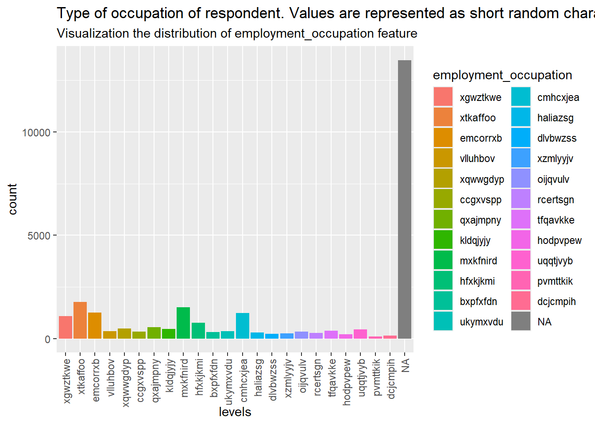

set.seed(123)Data Visualization
Setup
Set the Seed for reproducibility
library
library(tidyverse)── Attaching core tidyverse packages ──────────────────────── tidyverse 2.0.0 ──
✔ dplyr 1.1.4 ✔ readr 2.1.5
✔ forcats 1.0.0 ✔ stringr 1.5.1
✔ ggplot2 3.5.1 ✔ tibble 3.2.1
✔ lubridate 1.9.4 ✔ tidyr 1.3.1
✔ purrr 1.0.2
── Conflicts ────────────────────────────────────────── tidyverse_conflicts() ──
✖ dplyr::filter() masks stats::filter()
✖ dplyr::lag() masks stats::lag()
ℹ Use the conflicted package (<http://conflicted.r-lib.org/>) to force all conflicts to become errorslibrary(ggplot2)
library(ggthemes)
library(arrow)
Attaching package: 'arrow'
The following object is masked from 'package:lubridate':
duration
The following object is masked from 'package:utils':
timestampData
Import
Paths
mainDir <- 'data/cleaned_data'
subDir <- 'training_set_labels'
training_set_labels_path <- file.path(mainDir, subDir)
subDir <- 'training_set_features'
training_set_features_path <- file.path(mainDir, subDir)
subDir <- 'training_set'
training_set_path <- file.path(mainDir, subDir)
subDir <- 'submission_format'
submission_format_path <- file.path(mainDir, subDir)
subDir <- 'test_set_features'
test_set_features_path <- file.path(mainDir, subDir) Datasets
training_set_labels_pq <-
read_parquet(
paste(training_set_labels_path,"part-0.parquet", sep = "/"))
training_set_features_pq <-
read_parquet(
paste(training_set_features_path,"part-0.parquet", sep = "/"))
training_set_pq <-
read_parquet(
paste(training_set_path,"part-0.parquet", sep = "/"))
submission_format_pq <-
read_parquet(
paste(submission_format_path,"part-0.parquet", sep = "/"))
test_set_features_pq <-
read_parquet(
paste(test_set_features_path,"part-0.parquet", sep = "/"))Visualizing Distributions (univariate visualization)
Let’s get a sense of the distribution of the data.
Variables / Features
h1n1_concern
ggplot(training_set_pq, aes(x = h1n1_concern)) +
geom_bar(aes(fill = h1n1_concern)) +
labs(
title = "Level of concern about the H1N1 flu",
subtitle = "Visualization the distribution of h1n1_concern feature",
x = "levels"
) +
theme(axis.text.x = element_text(angle = 90, vjust = 0.5, hjust = 1)) +
scale_color_colorblind()
h1n1_knowledge
ggplot(training_set_pq, aes(x = h1n1_knowledge)) +
geom_bar(aes(fill = h1n1_knowledge)) +
labs(
title = "Level of knowledge about H1N1 flu",
subtitle = "Visualization the distribution of h1n1_knowledge feature",
x = "levels"
) +
theme(axis.text.x = element_text(angle = 90, vjust = 0.5, hjust = 1)) +
scale_color_colorblind()behavioral_antiviral_meds
ggplot(training_set_pq, aes(x = behavioral_antiviral_meds)) +
geom_bar(aes(fill = behavioral_antiviral_meds)) +
labs(
title = "Has taken antiviral medications (binary)",
subtitle = "Visualization the distribution of behavioral_antiviral_meds feature",
x = "False / True"
) +
scale_color_colorblind()
behavioral_avoidance
ggplot(training_set_pq, aes(x = behavioral_avoidance)) +
geom_bar(aes(fill = behavioral_avoidance)) +
labs(
title = "Has avoided close contact with others with flu-like symptoms. (binary)",
subtitle = "Visualization the distribution of behavioral_avoidance feature",
x = "False / True"
) +
scale_color_colorblind()
behavioral_face_mask
ggplot(training_set_pq, aes(x = behavioral_face_mask)) +
geom_bar(aes(fill = behavioral_face_mask)) +
labs(
title = "Has bought a face mask. (binary)",
subtitle = "Visualization the distribution of behavioral_face_mask feature",
x = "False / True"
) +
scale_color_colorblind()behavioral_wash_hands
ggplot(training_set_pq, aes(x = behavioral_wash_hands)) +
geom_bar(aes(fill = behavioral_wash_hands)) +
labs(
title = "Has frequently washed hands or used hand sanitizer. (binary)",
subtitle = "Visualization the distribution of behavioral_wash_hands feature",
x = "False / True"
) +
scale_color_colorblind()
behavioral_large_gatherings
ggplot(training_set_pq, aes(x = behavioral_large_gatherings)) +
geom_bar(aes(fill = behavioral_large_gatherings)) +
labs(
title = "Has reduced time at large gatherings. (binary)",
subtitle = "Visualization the distribution of behavioral_large_gatherings feature",
x = "False / True"
) +
scale_color_colorblind()
behavioral_outside_home
ggplot(training_set_pq, aes(x = behavioral_outside_home)) +
geom_bar(aes(fill = behavioral_outside_home)) +
labs(
title = "Has reduced contact with people outside of own household. (binary)",
subtitle = "Visualization the distribution of behavioral_outside_home feature",
x = "False / True"
) +
scale_color_colorblind()behavioral_touch_face
ggplot(training_set_pq, aes(x = behavioral_touch_face)) +
geom_bar(aes(fill = behavioral_touch_face)) +
labs(
title = "Has avoided touching eyes, nose, or mouth. (binary)",
subtitle = "Visualization the distribution of behavioral_touch_face feature",
x = "False / True"
) +
scale_color_colorblind()
doctor_recc_h1n1
ggplot(training_set_pq, aes(x = doctor_recc_h1n1)) +
geom_bar(aes(fill = doctor_recc_h1n1)) +
labs(
title = "H1N1 flu vaccine was recommended by doctor. (binary)",
subtitle = "Visualization the distribution of doctor_recc_h1n1 feature",
x = "False / True"
) +
scale_color_colorblind()
doctor_recc_seasonal
ggplot(training_set_pq, aes(x = doctor_recc_seasonal)) +
geom_bar(aes(fill = doctor_recc_seasonal)) +
labs(
title = "Seasonal flu vaccine was recommended by doctor. (binary)",
subtitle = "Visualization the distribution of doctor_recc_seasonal feature",
x = "False / True"
) +
scale_color_colorblind()chronic_med_condition
ggplot(training_set_pq, aes(x = chronic_med_condition)) +
geom_bar(aes(fill = chronic_med_condition)) +
labs(
title = "Visualization the distribution of chronic_med_condition feature",
subtitle = "Has any of the following chronic medical conditions: \nasthma or an other lung condition, diabetes, a heart condition, a kidney condition, \nsickle cell anemia or other anemia, a neurological or neuromuscular condition, \na liver condition, or a weakened immune system caused by a chronic illness \nor by medicines taken for a chronic illness. (binary)",
x = "False / True"
) +
theme(axis.text.x = element_text(vjust = 0.5, hjust = 1)) +
scale_color_colorblind()
child_under_6_months
ggplot(training_set_pq, aes(x = child_under_6_months)) +
geom_bar(aes(fill = child_under_6_months)) +
labs(
title = "Has regular close contact with a child under the age of six months. (binary)",
subtitle = "Visualization the distribution of child_under_6_months feature",
x = "False / True"
) +
scale_color_colorblind()
health_worker
ggplot(training_set_pq, aes(x = health_worker)) +
geom_bar(aes(fill = health_worker)) +
labs(
title = "Is a healthcare worker. (binary)",
subtitle = "Visualization the distribution of health_worker feature",
x = "False / True"
) +
scale_color_colorblind()health_insurance
ggplot(training_set_pq, aes(x = health_insurance)) +
geom_bar(aes(fill = health_insurance)) +
labs(
title = "Has health insurance. (binary)",
subtitle = "Visualization the distribution of health_insurance feature",
x = "False / True"
) +
scale_color_colorblind()
opinion_h1n1_risk
ggplot(training_set_pq, aes(x = opinion_h1n1_risk)) +
geom_bar(aes(fill = opinion_h1n1_risk)) +
labs(
title = "Respondent's opinion about risk of getting sick with H1N1 flu without vaccine.",
subtitle = "Visualization the distribution of opinion_h1n1_risk feature",
x = "levels"
) +
theme(axis.text.x = element_text(angle = 90, vjust = 0.5, hjust = 1)) +
scale_color_colorblind()opinion_h1n1_sick_from_vacc
ggplot(training_set_pq, aes(x = opinion_h1n1_sick_from_vacc)) +
geom_bar(aes(fill = opinion_h1n1_sick_from_vacc)) +
labs(
title = "Respondent's worry of getting sick from taking H1N1 vaccine.",
subtitle = "Visualization the distribution of opinion_h1n1_sick_from_vacc feature",
x = "levels"
) +
theme(axis.text.x = element_text(angle = 90, vjust = 0.5, hjust = 1)) +
scale_color_colorblind()opinion_seas_vacc_effective
ggplot(training_set_pq, aes(x = opinion_seas_vacc_effective)) +
geom_bar(aes(fill = opinion_seas_vacc_effective)) +
labs(
title = "Respondent's opinion about seasonal flu vaccine effectiveness.",
subtitle = "Visualization the distribution of opinion_seas_vacc_effective feature",
x = "levels"
) +
theme(axis.text.x = element_text(angle = 90, vjust = 0.5, hjust = 1)) +
scale_color_colorblind()opinion_seas_risk
ggplot(training_set_pq, aes(x = opinion_seas_risk)) +
geom_bar(aes(fill = opinion_seas_risk)) +
labs(
title = "Respondent's opinion about risk of getting sick with seasonal flu without vaccine.",
subtitle = "Visualization the distribution of opinion_seas_risk feature",
x = "levels"
) +
theme(axis.text.x = element_text(angle = 90, vjust = 0.5, hjust = 1)) +
scale_color_colorblind()opinion_seas_sick_from_vacc
ggplot(training_set_pq, aes(x = opinion_seas_sick_from_vacc)) +
geom_bar(aes(fill = opinion_seas_sick_from_vacc)) +
labs(
title = "Respondent's worry of getting sick from taking seasonal flu vaccine.",
subtitle = "Visualization the distribution of opinion_seas_sick_from_vacc feature",
x = "levels"
) +
theme(axis.text.x = element_text(angle = 90, vjust = 0.5, hjust = 1)) +
scale_color_colorblind()age_group
ggplot(training_set_pq, aes(x = age_group)) +
geom_bar(aes(fill = age_group)) +
labs(
title = "Age group of respondent.",
subtitle = "Visualization the distribution of age_group feature",
x = "levels"
) +
theme(axis.text.x = element_text(angle = 90, vjust = 0.5, hjust = 1)) +
scale_color_colorblind()education
ggplot(training_set_pq, aes(x = education)) +
geom_bar(aes(fill = education)) +
labs(
title = "Self-reported education level.",
subtitle = "Visualization the distribution of education feature",
x = "levels"
) +
theme(axis.text.x = element_text(angle = 90, vjust = 0.5, hjust = 1)) +
scale_color_colorblind()race
ggplot(training_set_pq, aes(x = race)) +
geom_bar(aes(fill = race)) +
labs(
title = "Race of respondent.",
subtitle = "Visualization the distribution of race feature",
x = "levels"
) +
theme(axis.text.x = element_text(angle = 90, vjust = 0.5, hjust = 1)) +
scale_color_colorblind()There is a huge skew for ‘white’.
sex
ggplot(training_set_pq, aes(x = sex)) +
geom_bar(aes(fill = sex)) +
labs(
title = "Sex of respondent.",
subtitle = "Visualization the distribution of sex feature",
x = "levels"
) +
theme(axis.text.x = element_text(angle = 90, vjust = 0.5, hjust = 1)) +
scale_color_colorblind()income_poverty
ggplot(training_set_pq, aes(x = income_poverty)) +
geom_bar(aes(fill = income_poverty)) +
labs(
title = "Household annual income of respondent with respect to 2008 Census poverty thresholds.",
subtitle = "Visualization the distribution of income_poverty feature",
x = "levels"
) +
theme(axis.text.x = element_text(angle = 90, vjust = 0.5, hjust = 1)) +
scale_color_colorblind()marital_status
ggplot(training_set_pq, aes(x = marital_status)) +
geom_bar(aes(fill = marital_status)) +
labs(
title = "Marital status of respondent.",
subtitle = "Visualization the distribution of marital_status feature",
x = "levels"
) +
theme(axis.text.x = element_text(angle = 90, vjust = 0.5, hjust = 1)) +
scale_color_colorblind()rent_or_own
ggplot(training_set_pq, aes(x = rent_or_own)) +
geom_bar(aes(fill = rent_or_own)) +
labs(
title = "Housing situation of respondent.",
subtitle = "Visualization the distribution of rent_or_own feature",
x = "levels"
) +
theme(axis.text.x = element_text(angle = 90, vjust = 0.5, hjust = 1)) +
scale_color_colorblind()employment_status
ggplot(training_set_pq, aes(x = employment_status)) +
geom_bar(aes(fill = employment_status)) +
labs(
title = "Employment status of respondent.",
subtitle = "Visualization the distribution of employment_status feature",
x = "levels"
) +
theme(axis.text.x = element_text(angle = 90, vjust = 0.5, hjust = 1)) +
scale_color_colorblind()hhs_geo_region
ggplot(training_set_pq, aes(x = hhs_geo_region)) +
geom_bar(aes(fill = hhs_geo_region)) +
labs(
title = "Visualization the distribution of hhs_geo_region feature",
subtitle = "Respondent's residence using a 10-region geographic classification defined by \nthe U.S. Dept. of Health and Human Services. \nValues are represented as short random character strings.",
x = "levels"
) +
theme(axis.text.x = element_text(angle = 90, vjust = 0.5, hjust = 1)) +
scale_color_colorblind()census_msa
ggplot(training_set_pq, aes(x = census_msa)) +
geom_bar(aes(fill = census_msa)) +
labs(
title = "Respondent's residence within metropolitan statistical areas (MSA) \nas defined by the U.S. Census.",
subtitle = "Visualization the distribution of census_msa feature",
x = "levels"
) +
theme(axis.text.x = element_text(angle = 90, vjust = 0.5, hjust = 1)) +
scale_color_colorblind()household_adults
ggplot(training_set_pq, aes(x = household_adults)) +
geom_bar(aes(fill = household_adults)) +
labs(
title = "Number of other adults in household, top-coded to 3.",
subtitle = "Visualization the distribution of household_adults feature",
x = "levels"
) +
theme(axis.text.x = element_text(angle = 90, vjust = 0.5, hjust = 1)) +
scale_color_colorblind()household_children
ggplot(training_set_pq, aes(x = household_children)) +
geom_bar(aes(fill = household_children)) +
labs(
title = "Number of other children in household, top-coded to 3.",
subtitle = "Visualization the distribution of household_children feature",
x = "levels"
) +
theme(axis.text.x = element_text(angle = 90, vjust = 0.5, hjust = 1)) +
scale_color_colorblind()employment_industry
ggplot(training_set_pq, aes(x = employment_industry)) +
geom_bar(aes(fill = employment_industry)) +
labs(
title = "Type of industry respondent is employed in. Values are represented as short random character strings.",
subtitle = "Visualization the distribution of employment_industry feature",
x = "levels"
) +
theme(axis.text.x = element_text(angle = 90, vjust = 0.5, hjust = 1)) +
scale_color_colorblind()training_set_features_pq |>
count(employment_industry)# A tibble: 22 × 2
employment_industry n
<fct> <int>
1 pxcmvdjn 1037
2 rucpziij 523
3 wxleyezf 1804
4 saaquncn 338
5 xicduogh 851
6 ldnlellj 1231
7 wlfvacwt 215
8 nduyfdeo 286
9 fcxhlnwr 2468
10 vjjrobsf 527
# ℹ 12 more rows13330/nrow(training_set_features_pq)[1] 0.4991201About 50% of the respondents did not report and/or are missing employment_industry. Not sure how good this variable/feature is for predictive model.
employment_occupation
ggplot(training_set_pq, aes(x = employment_occupation)) +
geom_bar(aes(fill = employment_occupation)) +
labs(
title = "Type of occupation of respondent. Values are represented as short random character strings.",
subtitle = "Visualization the distribution of employment_occupation feature",
x = "levels"
) +
theme(axis.text.x = element_text(angle = 90, vjust = 0.5, hjust = 1)) +
scale_color_colorblind()
training_set_features_pq |>
count(employment_occupation)# A tibble: 24 × 2
employment_occupation n
<fct> <int>
1 xgwztkwe 1082
2 xtkaffoo 1778
3 emcorrxb 1270
4 vlluhbov 354
5 xqwwgdyp 485
6 ccgxvspp 341
7 qxajmpny 548
8 kldqjyjy 469
9 mxkfnird 1509
10 hfxkjkmi 766
# ℹ 14 more rows13470/nrow(training_set_features_pq)[1] 0.504362250% of the respondents did not report and/or are missing employment_occupation. Not sure how good this variable/feature is for predictive model.